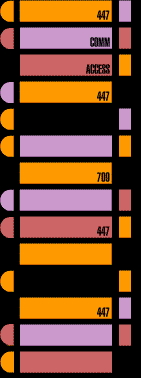

FILES
FILESThese are LEGAL files, and samples of INI files. None of these files were made with Microsofts development system
To save application files, RIGHT CLICK, and SAVE AS.
To View TXT Files just click -> or right click and SAVE AS to keep.
The EVOX INI files are unaltered, direct from the Archive (RAR or ZIP).
BURNING ISO TOOLS
DVD Decryptor - The author's site does not exist anymore. My guess is no more support either.


 TEXT
FILES
TEXT
FILESEvox RemoteX MENU.INI File - This is from the RemoteX Boot Disc
EvoX INI File - Build3539 - Sample INI File [Root C]
EvoX INI File - Includes Format F_Drive Routine for OE HDD - Save As "evox.ini"
EvoX INI File - W/Emulator option added to Launch Menu [folder = e:\emulation]
EvoX Skin INI File - Shows how SKINS are loaded and configured
Items File - Sample ITEMS.TXT file [Root C]
Qwix Connections.INI File - Sample SETUP Information [Qwix Folder]
Atari Emulator [Ataribox] INI File - From the Atari2600 Emulator
APPLICATIONS
QWIX 1.01 [RAR] - This software runs on the PC, FTP & Build ISO
XB_PartitionerV1.0 [RAR] - Partition Larger HDD For Modded Xbox - INSTRUCTIONS
boXplorer v0.96 BETA - Browse, copy, move, delete; rename files, folders; play Xbox WMV; launch XBE files.
Video Select V2 - Select video mode from BOOT DISC - PAL/NTSC - Reset DVD REGION/DONGLE
TRAINERS
Trainer Pack - Zip file with trainers in it. The size of trainers are so small, a ZIP file will contain a lot of
Them. I will update the pak when I get any other trainers.
136-EvoxTrainers - RAR Archive with ZIP archives in it.
BigTrainerPak - ZIP Archive with loads of trainers and .ASM files.

Anything that was built with Miscorsoft's XDK system will not be put on this web site!
StarTrek SkinPak-1